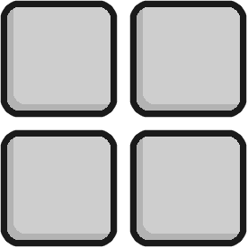

Eine Backup-Lösung für einen Umfassenden Schutz
Datenverluste können jederzeit durch Computerfehlfunktionen, Viren oder Maleware verursacht werden. Mithilfe von Homunkulus ist es ein Kinderspiel, ein komplettes Backup Einer Festplatte oder ein Teilbackup ihrer wichtigsten Dateien zu erstellen. Stellen Sie sicher, dass Ihre Daten zu jeder Zeit geschützt sind.


Sicherung und Wiederherstellung von Festplatten
Sichern Sie alle Daten und Einstellungen einer Partition oder aller Partitionen (Festplatten), um im Falle einer Datenbeschädigung absolute Sicherheit zu haben.

Systemsicherung und Wiederherstellung
Sichern Sie Systeme, Boot-Partitionen und Programmdateien, um Ihr System einfach, effizient und sicher wiederherstellen zu können.